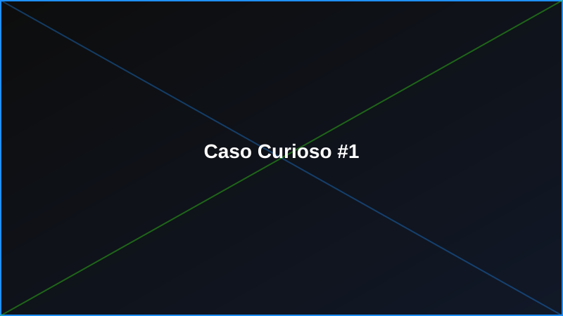

Caso Curioso #1: El primer torneo LAN de Chile
A comienzos de la década de los 2000, un grupo de jugadores de Santiago organizó lo que muchos consideran el primer torneo LAN masivo del país: decenas de computadores conectados por cable en un gimnasio techado, torneos de Counter-Strike y Warcraft III corriendo en paralelo, y filas de jugadores esperando su turno para competir.
Ese evento sentó las bases de lo que hoy conocemos como la escena esports chilena. Con el tiempo, estos encuentros pasaron de gimnasios improvisados a centros de eventos con miles de asistentes, transmisión en vivo y patrocinadores internacionales.
En Level-Up Gamer creemos que esta historia importa: por eso destinamos parte de nuestras ganancias a patrocinar torneos locales, y nuestro programa de puntos LevelUp premia a quienes participan activamente en la comunidad gamer, ya sea jugando, organizando eventos o simplemente compartiendo la pasión por los videojuegos.